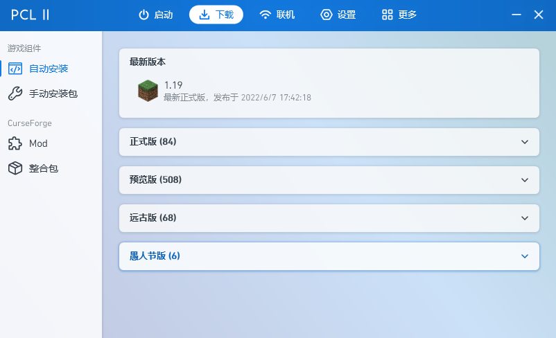
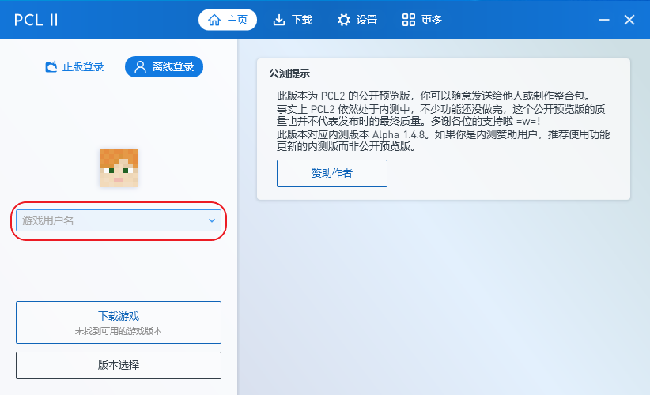

#1 启动器下载
本节内容
1. 如何获取PCL2
2.PCL2与
在PCL2启动器中，上方的导航栏是软件的关键。导航栏分区的与功能如下表所示
功能区 |
功能 |
主页 |
登录账号；选择版本；启动游戏 |
下载 |
一键安装；安装包下载；Mods下载；整合包下载（附带自动安装） |
联机 |
联机方式；独立的设置、帮助文档、反馈 |
设置 |
游戏（Minecraft）设置；启动器个性化；启动器设置；联机功能设置 |
更多 |
帮助文档；关于与鸣谢；百宝箱（有趣的小功能）；反馈 |
#2 认识界面
本节内容
认识PCL2启动器的界面，以及每个分区的功能
在PCL2启动器中，上方的导航栏是软件的关键。导航栏分区的与功能如下表所示
功能区 |
功能 |
主页 |
登录账号；选择版本；启动游戏 |
下载 |
一键安装；安装包下载；Mods下载；整合包下载（附带自动安装） |
联机 |
联机方式；独立的设置、帮助文档、反馈 |
设置 |
游戏（Minecraft）设置；启动器个性化；启动器设置；联机功能设置 |
更多 |
帮助文档；关于与鸣谢；百宝箱（有趣的小功能）；反馈 |
#3 登录
本节内容
1. 各种登录方式的异同
2. 如何使用Mojang账号、微软账号、离线账号登录
PCL2提供了多种的登录方式如：Mojang登录、微软登录、离线登录。下表为这些登录方式的优缺点
登录方式 |
优点/缺点 |
Mojang |
正版；可登录需正版验证的服务器 |
微软（Microsoft） |
正版；可登录需正版验证的服务器 |
离线登录 |
盗版；免费；迁移账号信息可能会比较麻烦，甚至无法迁移 |
提示&帮助
本质上，Mojang登录与微软登录没有差别。对于Windows用户来说，微软登录更加方便
下面为各种登录方式的登录方法
点击主页上的“Mojang”

点击主页上的“微软”

游戏资源的管理
本节内容
1. 资源文件夹的添加
2. 版本隔离的概念
在下载游戏之前，我们先来了解一下管理着游戏资源的文件夹。
点击“启动”页面左下角的“版本选择”
在了解了“版本选择”之后，我们再了解一下版本隔离。
点击“设置”——“游戏”。在右侧页面中可看到“版本隔离”
什么是版本隔离？
版本隔离是Minecraft启动器的基本功能模块。在没有开启的情况下，所有你单独下载的游戏都会共用一套Minecraft原版文件。 如果你加入了模组到一个存档（下文称为存档1），在大文件夹（在版本选择中导入的文件夹）中的“mods”文件夹就会存在存档1的模组。如果之后， 你又加入了模组到另一个存档（下文称为存档2）在“大文件夹”——“version”——“存档2”文件夹中则会出现另一个“mods”文件夹保存着存档2的模组。 这样的分类方式可能会导致找mods等文件夹找不准的情况。因此，推荐大家开启“隔离所有版本”。
下载与安装
本节内容
1. 安装原版Minecraft和允许添加模组的Minecraft的方法
2. 手动安装包的介绍
3. 从启动器内下载Mod和整合包的方法（自动）
4. 手动安装整合包的方法
下载页面可获取Minecraft游戏资源。下载页面分区的与功能如下表所示
功能区 |
功能 |
自动安装 |
自动（一键）安装Minecraft；安装后可直接被启动器打开 |
手动安装包 |
下载原版安装包，下载的资源需手动配置和安装 |
Mod |
从Curseforge直接下载Mods（模组） |
整合包 |
从Curseforge直接下载整合包 |
下载页面可获取Minecraft游戏资源。下载页面分区的与功能如下表所示
功能区 |
功能 |
自动（一键）安装Minecraft；安装后可直接被启动器打开 |
|
手动安装包 |
下载原版安装包，下载的资源需手动配置和安装 |
Mod |
从Curseforge直接下载Mods（模组） |
整合包 |
从Curseforge直接下载整合包 |
设置的配置
本节内容
1. 启动器个性化
2. 启动器部分功能的配置
设置页面是启动器最重要的部分。这部分区域可以设置启动器与游戏（Minecraft）。设置页面分区的与功能如下表所示：
功能区 |
功能 |
游戏（下一节内容） |
离线账号皮肤设置；启动选项；游戏内存分配；高级设置 |
个性化 |
基础设置；背景图片；背景音乐；标题设置；自定义主页；功能隐藏 |
启动器 |
下载设置；辅助功能；系统设置；调试选项 |
联机 |
通用设置 |
游戏设置
本节内容
1. 设置游戏的方法（“设置”——“游戏”）
2. 版本设置（“启动”——“版本设置”）
3. Mod管理
设置页面是启动器最重要的部分。这部分区域可以设置启动器与游戏（Minecraft）。设置页面分区的与功能如下表所示：
启动
本节内容
1. 启动游戏
提示&帮助
1. 在启动前，请检查JAVA是否安装，JAVA版本是否正确
2. 高版本的Minecrft（1.17及以上）需要高版本的JAVA
设置页面是启动器最重要的部分。这部分区域可以设置启动器与游戏（Minecraft）。设置页面分区的与功能如下表所示：
#9 杂项
本节内容
1. 启动器内的帮助文档
2. 百宝箱内的小功能
3. 反馈BUG的方法
设置页面是启动器最重要的部分。这部分区域可以设置启动器与游戏（Minecraft）。设置页面分区的与功能如下表所示：